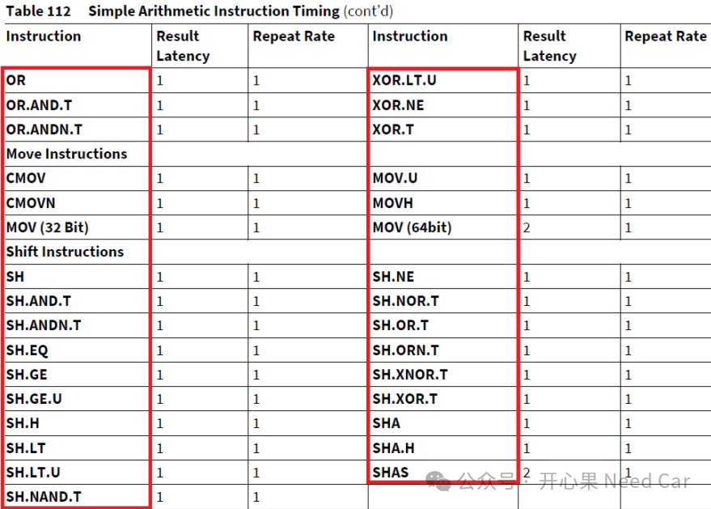
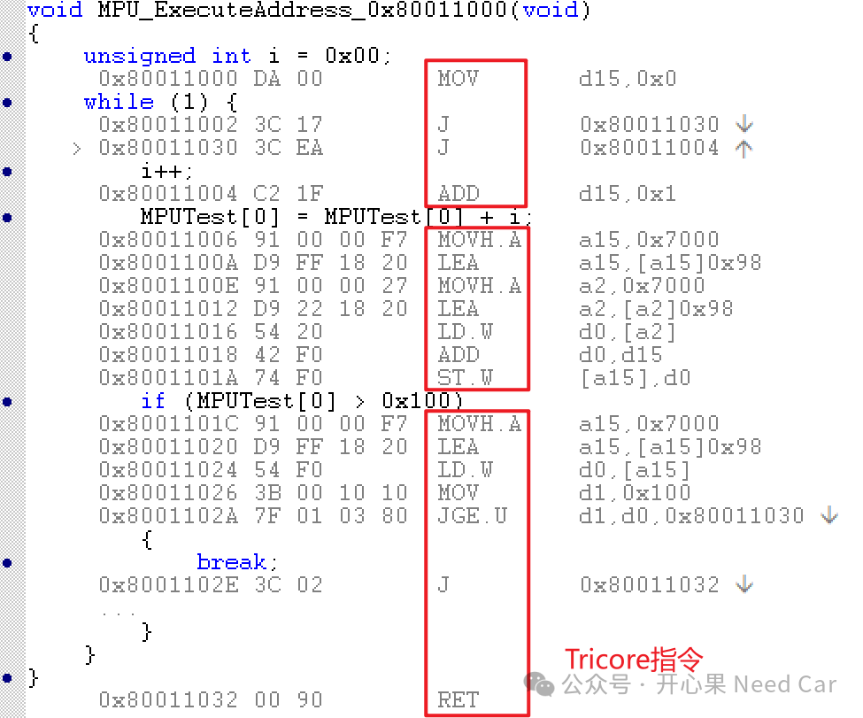
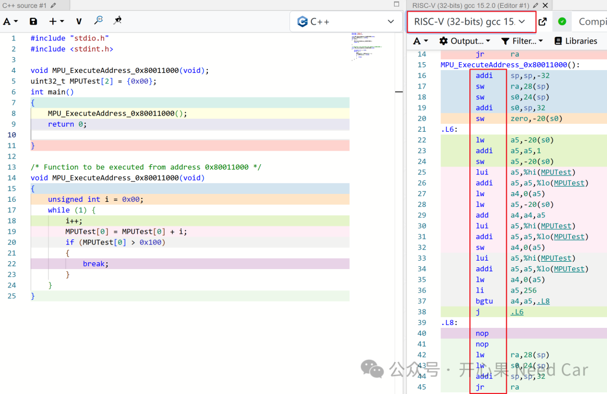

开心果 Need Car · 2025-08-28T06:26:00+08:00 · 微信原文
1、架构（Architecture）和CPU关系
架构通常对应一种或一类CPU类型。
（一）架构定义了CPU的行为和能力
架构（如 x86, ARM, RISC-V, TriCore）决定了CPU的指令集、寄存器布局、数据通路等。不同架构的CPU无法直接运行彼此的机器码。
（二）一个架构可以有多个CPU型号
例如：ARM架构下有Cortex-M、Cortex-A等不同系列CPU。
TriCore架构下也有多个型号，如TC1796、TC277、TC397等。TriCore是一种CPU架构，同时也可以指代基于该架构的处理器核心，所以在实际应用中，TriCore既是架构，也是CPU的一种类型。
（三）一个CPU类型属于某个架构
比如：Intel Core i7属于x86架构，Infineon TC397属于TriCore架构。
（四）架构影响软件兼容性
软件必须针对特定架构编译才能运行。比如，Windows for x86无法在 ARM架构CPU上运行，除非有模拟或重新编译。
架构和CPU关系如下所示：
ARMv7-M | Cortex-M3、M4 等 |
Intel Core i7、AMD Ryzen 等 | |
TC1796、TC277、TC397 等 |
2、架构和指令集（Instruction Set Architecture, ISA）关系
架构是处理器的整体设计，包括：数据通路（如寄存器、ALU、总线）、控制逻辑、存储系统（缓存、内存接口）、多核设计、功耗管理等。
指令集是处理器能执行的所有指令的集合，是软件与硬件之间的接口。例如：加法、乘法、跳转、加载/存储等指令。每条指令的编码格式和执行语义。
Tricore架构的部分指令如下所示：

（一）架构实现指令集
架构是对指令集的具体实现。比如，TriCore架构实现了TriCore ISA（TriCore Instruction Set Architecture）指令集。
TriCore架构结合了微控制器的实时性（控制类指令）、DSP的计算能力（信号处理指令）、RISC的高效性（精简指令集）。
不同架构可以实现相同的ISA，比如：多个厂商都可以实现ARM ISA。
（二）指令集定义了架构的行为边界
ISA决定了程序如何与处理器交互。架构必须遵守ISA的规范，确保软件兼容性。
（三）架构可以扩展指令集
某些架构在标准ISA基础上增加专用指令，比如：DSP指令、SIMD指令。
3、CPU与指令集关系
指令集是“语言”，CPU 是“说这种语言的机器”。
（一）指令集（ISA）定义了：
CPU能执行哪些指令（如加法、跳转、加载内存等），
每条指令的格式和编码方式
寄存器的数量和用途
内存访问方式（如 load/store）
（二）CPU是指令集的实现者
CPU是一块实际的硬件芯片，它按照指令集的规范来执行程序。
不同的CPU可以实现相同的指令集（比如多个厂商都可以制造ARMCPU）。
4、程序与指令集关系理解
uint32 MPUTest[2] = {0x00};/* Function to be executed from address 0x80011000 */void MPU_ExecuteAddress_0x80011000(void){unsigned int i = 0x00;while (1) {i++;MPUTest[0] = MPUTest[0] + i;if (MPUTest[0] > 0x100){break;}}}


往期精彩回顾